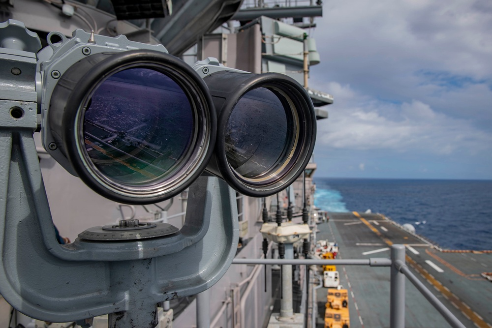

U.S. Navy photo by MC Seaman Eric Nelson · DVIDS 10117833 · Public domain · Marine UH-1 Huey lands on USS Makin Island's flight deck, Pacific Ocean, Nov. 15-16, 2026.
USNI News
Amphibious assault ship USS Makin Island and transport dock USS John P. Murtha left Singapore this week, bound for the Indian Ocean with Marines from the 13th Marine Expeditionary Unit aboard, as the Makin Island Amphibious Ready Group continues its run through the Indo-Pacific
USNI News reports the two ships departed Tuesday from Sembawang, Singapore, after transiting the Strait of Johor and the Singapore Strait on a westbound track toward the Indian Ocean. Makin Island and John P. Murtha, embarked with elements of the 13th Marine Expeditionary Unit, round out the Makin Island Amphibious Ready Group together with amphibious transport dock USS Anchorage; USNI's own Nov. 20 Western Pacific Pulse had already tracked the group moving through the region this month. The hero photo above, taken days earlier in the same deployment, shows a Marine UH-1 Huey landing on Makin Island's flight deck in the Pacific.
USNI News · Read source →